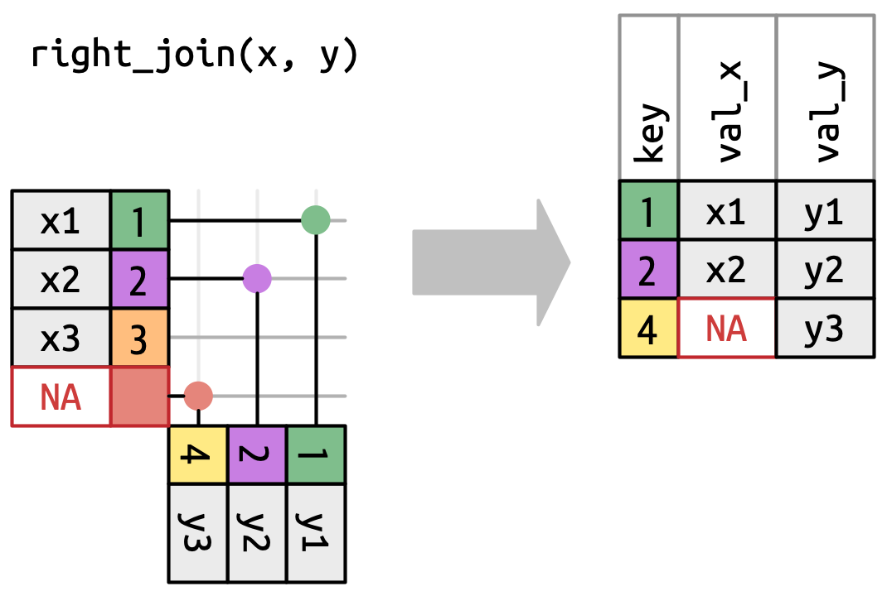

19 Uniones
19.1 Introducción
Es raro que un análisis de datos involucre solo un único marco de datos. Por lo general, tiene muchos marcos de datos y debe unirlos para responder las preguntas que le interesan. Este capítulo le presentará dos tipos importantes de uniones:
- Combinaciones mutantes, que agregan nuevas variables a un marco de datos a partir de observaciones coincidentes en otro.
- Combinaciones de filtrado, que filtran las observaciones de un marco de datos en función de si coinciden o no con una observación en otro.
Comenzaremos analizando las llaves, las variables que se utilizan para conectar un par de marcos de datos en una combinación. Cimentamos la teoría con un examen de las llaves en los conjuntos de datos del paquete nycflights13, luego usamos ese conocimiento para comenzar a unir marcos de datos. A continuación, analizaremos cómo funcionan las uniones, centrándonos en su acción en las filas. Terminaremos con una discusión sobre las uniones no equitativas, una familia de uniones que proporcionan una forma más flexible de hacer coincidir llaves que la relación de igualdad predeterminada.
19.1.1 Requisitos previos
En este capítulo, exploraremos los cinco conjuntos de datos relacionados de nycflights13 utilizando las funciones de combinación de dplyr.
19.2 Llaves
Para comprender las uniones, primero debe comprender cómo se pueden conectar dos tablas a través de un par de llaves, dentro de cada tabla. En esta sección, aprenderá sobre los dos tipos de llave y verá ejemplos de ambos en los conjuntos de datos del paquete nycflights13. También aprenderá cómo verificar que sus llaves sean válidas y qué hacer si su tabla no tiene una llave.
19.2.1 Llaves primarias y foráneas
Cada unión implica un par de llaves: una llave principal y una llave externa. Una Llave principal es una variable o un conjunto de variables que identifica de forma única cada observación. Cuando se necesita más de una variable, la llave se denomina Llave compuesta. Por ejemplo, en nycflights13:
-
airlinesregistra dos datos sobre cada aerolínea: su código de aerolínea y su nombre completo. Puede identificar una línea aérea con su código de dos letras, haciendo quecarriersea la llave principal.airlines #> # A tibble: 16 × 2 #> carrier name #> <chr> <chr> #> 1 9E Endeavor Air Inc. #> 2 AA American Airlines Inc. #> 3 AS Alaska Airlines Inc. #> 4 B6 JetBlue Airways #> 5 DL Delta Air Lines Inc. #> 6 EV ExpressJet Airlines Inc. #> # ℹ 10 more rows -
airportsregistra datos sobre cada aeropuerto. Puede identificar cada aeropuerto por su código de aeropuerto de tres letras, haciendo quefaasea la llave principal.airports #> # A tibble: 1,458 × 8 #> faa name lat lon alt tz dst #> <chr> <chr> <dbl> <dbl> <dbl> <dbl> <chr> #> 1 04G Lansdowne Airport 41.1 -80.6 1044 -5 A #> 2 06A Moton Field Municipal Airport 32.5 -85.7 264 -6 A #> 3 06C Schaumburg Regional 42.0 -88.1 801 -6 A #> 4 06N Randall Airport 41.4 -74.4 523 -5 A #> 5 09J Jekyll Island Airport 31.1 -81.4 11 -5 A #> 6 0A9 Elizabethton Municipal Airpo… 36.4 -82.2 1593 -5 A #> # ℹ 1,452 more rows #> # ℹ 1 more variable: tzone <chr> -
planesregistra datos sobre cada plano. Puede identificar un avión por su número de cola, haciendo quetailnumsea la llave principal.planes #> # A tibble: 3,322 × 9 #> tailnum year type manufacturer model engines #> <chr> <int> <chr> <chr> <chr> <int> #> 1 N10156 2004 Fixed wing multi… EMBRAER EMB-145XR 2 #> 2 N102UW 1998 Fixed wing multi… AIRBUS INDUSTR… A320-214 2 #> 3 N103US 1999 Fixed wing multi… AIRBUS INDUSTR… A320-214 2 #> 4 N104UW 1999 Fixed wing multi… AIRBUS INDUSTR… A320-214 2 #> 5 N10575 2002 Fixed wing multi… EMBRAER EMB-145LR 2 #> 6 N105UW 1999 Fixed wing multi… AIRBUS INDUSTR… A320-214 2 #> # ℹ 3,316 more rows #> # ℹ 3 more variables: seats <int>, speed <int>, engine <chr> -
weatherregistra datos sobre el clima en los aeropuertos de origen. Puede identificar cada observación por la combinación de ubicación y hora, haciendo queoriginytime_hoursean la llave principal compuesta.weather #> # A tibble: 26,115 × 15 #> origin year month day hour temp dewp humid wind_dir #> <chr> <int> <int> <int> <int> <dbl> <dbl> <dbl> <dbl> #> 1 EWR 2013 1 1 1 39.0 26.1 59.4 270 #> 2 EWR 2013 1 1 2 39.0 27.0 61.6 250 #> 3 EWR 2013 1 1 3 39.0 28.0 64.4 240 #> 4 EWR 2013 1 1 4 39.9 28.0 62.2 250 #> 5 EWR 2013 1 1 5 39.0 28.0 64.4 260 #> 6 EWR 2013 1 1 6 37.9 28.0 67.2 240 #> # ℹ 26,109 more rows #> # ℹ 6 more variables: wind_speed <dbl>, wind_gust <dbl>, …
Una llave externa es una variable (o conjunto de variables) que corresponde a una llave principal en otra tabla. Por ejemplo:
-
flights$tailnumes una llave foránea que corresponde a la llave primariaplanes$tailnum. -
flights$carrieres una llave foránea que corresponde a la llave primariaairlines$carrier. -
flights$origines una llave foránea que corresponde a la llave primariaairports$faa. -
flights$destes una llave foránea que corresponde a la llave primariaairports$faa. -
flights$origin-flights$time_houres una llave foránea compuesta que corresponde a la llave primaria compuestaweather$origin-weather$time_hour.
Estas relaciones se resumen visualmente en Figura 19.1.

Notará una buena característica en el diseño de estas claves: las claves principal y externa casi siempre tienen los mismos nombres, lo que, como verá en breve, hará que su vida de unión sea mucho más fácil. También vale la pena señalar la relación opuesta: casi todos los nombres de variables utilizados en varias tablas tienen el mismo significado en cada lugar. Sólo hay una excepción: year significa año de salida en flights y año de fabricación en planes. Esto se volverá importante cuando empecemos a unir tablas.
19.2.2 Comprobación de llaves primarias
Ahora que hemos identificado las claves principales en cada tabla, es una buena práctica verificar que realmente identifiquen de manera única cada observación. Una forma de hacerlo es contar, count(), las llaves primarias y buscar entradas donde n sea mayor que uno. Esto revela que planes y weather se ven bien:
También debe verificar si faltan valores en sus llaves principales — si falta un valor, ¡entonces no puede identificar una observación!
planes |>
filter(is.na(tailnum))
#> # A tibble: 0 × 9
#> # ℹ 9 variables: tailnum <chr>, year <int>, type <chr>, manufacturer <chr>,
#> # model <chr>, engines <int>, seats <int>, speed <int>, engine <chr>
weather |>
filter(is.na(time_hour) | is.na(origin))
#> # A tibble: 0 × 15
#> # ℹ 15 variables: origin <chr>, year <int>, month <int>, day <int>,
#> # hour <int>, temp <dbl>, dewp <dbl>, humid <dbl>, wind_dir <dbl>, …19.2.3 Llaves sustitutas
Hasta ahora no hemos hablado de la llave principal para flights. No es muy importante aquí, porque no hay marcos de datos que lo usen como clave externa, pero aún así es útil considerarlo porque es más fácil trabajar con observaciones si tenemos alguna forma de describirlas a otros.
Después de pensar un poco y experimentar, determinamos que hay tres variables que juntas identifican de manera única cada vuelo:
¿La ausencia de duplicados convierte automáticamente a time_hour-carrier-flight en una llave principal? Sin duda es un buen comienzo, pero no lo garantiza. Por ejemplo, ¿son la altitud y la latitud una buena clave principal para airports?
Identificar un aeropuerto por su altitud y latitud es claramente una mala idea y, en general, no es posible saber solo a partir de los datos si una combinación de variables constituye o no una buena clave primaria. Pero para los vuelos, la combinación de time_hour, carrier y flight parece razonable porque sería realmente confuso para una aerolínea y sus clientes si hubiera varios vuelos con el mismo número de vuelo en el aire al mismo tiempo.
Dicho esto, sería mejor que introdujéramos una clave sustituta numérica simple usando el número de fila:
flights2 <- flights |>
mutate(id = row_number(), .before = 1)
flights2
#> # A tibble: 336,776 × 20
#> id year month day dep_time sched_dep_time dep_delay arr_time
#> <int> <int> <int> <int> <int> <int> <dbl> <int>
#> 1 1 2013 1 1 517 515 2 830
#> 2 2 2013 1 1 533 529 4 850
#> 3 3 2013 1 1 542 540 2 923
#> 4 4 2013 1 1 544 545 -1 1004
#> 5 5 2013 1 1 554 600 -6 812
#> 6 6 2013 1 1 554 558 -4 740
#> # ℹ 336,770 more rows
#> # ℹ 12 more variables: sched_arr_time <int>, arr_delay <dbl>, …Las claves sustitutas pueden ser particularmente útiles cuando se comunican con otros humanos: es mucho más fácil decirle a alguien que mire el vuelo 2001 que decir que mire el UA430 que partió 9am 2013-01-03.
19.2.4 Ejercicios
Nos olvidamos de dibujar la relación entre
weatheryairportsen Figura 19.1. ¿Cuál es la relación y cómo debería aparecer en el diagrama?weathersolo contiene información de los tres aeropuertos de origen en NYC. Si contuviera registros meteorológicos de todos los aeropuertos de EE.UU. ¿qué conexión adicional haría conflights?Las variables
year,month,day,houryorigincasi forman una clave compuesta paraweather, pero hay una hora que tiene observaciones duplicadas. ¿Puedes averiguar qué tiene de especial esa hora?Sabemos que algunos días del año son especiales y en ellos vuelan menos personas de lo habitual (por ejemplo, la víspera de Navidad y el día de Navidad). ¿Cómo podría representar esos datos como un marco de datos? ¿Cuál sería la llave principal? ¿Cómo se conectaría a los marcos de datos existentes?
Dibuje un diagrama que ilustre las conexiones entre los marcos de datos
Batting,PeopleySalariesen el paquete Lahman. Dibuja otro diagrama que muestre la relación entrePeople,Managers,AwardsManagers. ¿Cómo caracterizaría la relación entre los data framesBatting,Pitching, yFielding?
19.3 Uniones básicas
Ahora que comprende cómo se conectan los marcos de datos a través de claves, podemos comenzar a usar uniones para comprender mejor el conjunto de datos de flights. dplyr proporciona seis funciones de unión: left_join(), inner_join(), right_join(), full_join(), semi_join() y anti_join(). Todas tienen la misma interfaz: toman un par de marcos de datos (x e y) y devuelven un marco de datos. El orden de las filas y columnas en la salida está determinado principalmente por x.
En esta sección, aprenderá a usar una unión mutante, left_join(), y dos uniones de filtrado, semi_join() y anti_join(). En la siguiente sección, aprenderá exactamente cómo funcionan estas funciones y sobre las inner_join(), right_join() y full_join() restantes.
19.3.1 Uniones mutantes
Una unión mutante le permite combinar variables de dos marcos de datos: primero hace coincidir las observaciones por sus claves, luego copia las variables de un marco de datos al otro. Al igual que mutate(), las funciones de combinación agregan variables a la derecha, por lo que si su conjunto de datos tiene muchas variables, no verá las nuevas. Para estos ejemplos, facilitaremos ver lo que sucede creando un conjunto de datos más estrecho con solo seis variables1:
flights2 <- flights |>
select(year, time_hour, origin, dest, tailnum, carrier)
flights2
#> # A tibble: 336,776 × 6
#> year time_hour origin dest tailnum carrier
#> <int> <dttm> <chr> <chr> <chr> <chr>
#> 1 2013 2013-01-01 05:00:00 EWR IAH N14228 UA
#> 2 2013 2013-01-01 05:00:00 LGA IAH N24211 UA
#> 3 2013 2013-01-01 05:00:00 JFK MIA N619AA AA
#> 4 2013 2013-01-01 05:00:00 JFK BQN N804JB B6
#> 5 2013 2013-01-01 06:00:00 LGA ATL N668DN DL
#> 6 2013 2013-01-01 05:00:00 EWR ORD N39463 UA
#> # ℹ 336,770 more rowsHay cuatro tipos de unión mutante, pero hay una que usará casi todo el tiempo: left_join(). Es especial porque la salida siempre tendrá las mismas filas que x, el dataframe al que estas uniendo2. El uso principal de left_join() es agregar metadatos adicionales. Por ejemplo, podemos usar left_join() para agregar el nombre completo de la aerolínea a los datos de flights2:
flights2 |>
left_join(airlines)
#> Joining with `by = join_by(carrier)`
#> # A tibble: 336,776 × 7
#> year time_hour origin dest tailnum carrier name
#> <int> <dttm> <chr> <chr> <chr> <chr> <chr>
#> 1 2013 2013-01-01 05:00:00 EWR IAH N14228 UA United Air Lines In…
#> 2 2013 2013-01-01 05:00:00 LGA IAH N24211 UA United Air Lines In…
#> 3 2013 2013-01-01 05:00:00 JFK MIA N619AA AA American Airlines I…
#> 4 2013 2013-01-01 05:00:00 JFK BQN N804JB B6 JetBlue Airways
#> 5 2013 2013-01-01 06:00:00 LGA ATL N668DN DL Delta Air Lines Inc.
#> 6 2013 2013-01-01 05:00:00 EWR ORD N39463 UA United Air Lines In…
#> # ℹ 336,770 more rowsO podríamos averiguar la temperatura y la velocidad del viento cuando partió cada avión:
flights2 |>
left_join(weather |> select(origin, time_hour, temp, wind_speed))
#> Joining with `by = join_by(time_hour, origin)`
#> # A tibble: 336,776 × 8
#> year time_hour origin dest tailnum carrier temp wind_speed
#> <int> <dttm> <chr> <chr> <chr> <chr> <dbl> <dbl>
#> 1 2013 2013-01-01 05:00:00 EWR IAH N14228 UA 39.0 12.7
#> 2 2013 2013-01-01 05:00:00 LGA IAH N24211 UA 39.9 15.0
#> 3 2013 2013-01-01 05:00:00 JFK MIA N619AA AA 39.0 15.0
#> 4 2013 2013-01-01 05:00:00 JFK BQN N804JB B6 39.0 15.0
#> 5 2013 2013-01-01 06:00:00 LGA ATL N668DN DL 39.9 16.1
#> 6 2013 2013-01-01 05:00:00 EWR ORD N39463 UA 39.0 12.7
#> # ℹ 336,770 more rowsO qué tamaño de avión estaba volando:
flights2 |>
left_join(planes |> select(tailnum, type, engines, seats))
#> Joining with `by = join_by(tailnum)`
#> # A tibble: 336,776 × 9
#> year time_hour origin dest tailnum carrier type
#> <int> <dttm> <chr> <chr> <chr> <chr> <chr>
#> 1 2013 2013-01-01 05:00:00 EWR IAH N14228 UA Fixed wing multi en…
#> 2 2013 2013-01-01 05:00:00 LGA IAH N24211 UA Fixed wing multi en…
#> 3 2013 2013-01-01 05:00:00 JFK MIA N619AA AA Fixed wing multi en…
#> 4 2013 2013-01-01 05:00:00 JFK BQN N804JB B6 Fixed wing multi en…
#> 5 2013 2013-01-01 06:00:00 LGA ATL N668DN DL Fixed wing multi en…
#> 6 2013 2013-01-01 05:00:00 EWR ORD N39463 UA Fixed wing multi en…
#> # ℹ 336,770 more rows
#> # ℹ 2 more variables: engines <int>, seats <int>Cuando left_join() no encuentra una coincidencia para una fila en x, completa las nuevas variables con los valores que faltan. Por ejemplo, no hay información sobre el avión con el número de cola N3ALAA, por lo que faltarán el type, los engines y los seats:
flights2 |>
filter(tailnum == "N3ALAA") |>
left_join(planes |> select(tailnum, type, engines, seats))
#> Joining with `by = join_by(tailnum)`
#> # A tibble: 63 × 9
#> year time_hour origin dest tailnum carrier type engines seats
#> <int> <dttm> <chr> <chr> <chr> <chr> <chr> <int> <int>
#> 1 2013 2013-01-01 06:00:00 LGA ORD N3ALAA AA <NA> NA NA
#> 2 2013 2013-01-02 18:00:00 LGA ORD N3ALAA AA <NA> NA NA
#> 3 2013 2013-01-03 06:00:00 LGA ORD N3ALAA AA <NA> NA NA
#> 4 2013 2013-01-07 19:00:00 LGA ORD N3ALAA AA <NA> NA NA
#> 5 2013 2013-01-08 17:00:00 JFK ORD N3ALAA AA <NA> NA NA
#> 6 2013 2013-01-16 06:00:00 LGA ORD N3ALAA AA <NA> NA NA
#> # ℹ 57 more rowsVolveremos a este problema unas cuantas veces en el resto del capítulo.
19.3.2 Especificación de llaves de combinación
Por defecto, left_join() usará todas las variables que aparecen en ambos marcos de datos como llave de unión, la llamada unión natural. Esta es una heurística útil, pero no siempre funciona. Por ejemplo, ¿qué sucede si tratamos de unir flights2 con el conjunto de datos completo planes?
flights2 |>
left_join(planes)
#> Joining with `by = join_by(year, tailnum)`
#> # A tibble: 336,776 × 13
#> year time_hour origin dest tailnum carrier type manufacturer
#> <int> <dttm> <chr> <chr> <chr> <chr> <chr> <chr>
#> 1 2013 2013-01-01 05:00:00 EWR IAH N14228 UA <NA> <NA>
#> 2 2013 2013-01-01 05:00:00 LGA IAH N24211 UA <NA> <NA>
#> 3 2013 2013-01-01 05:00:00 JFK MIA N619AA AA <NA> <NA>
#> 4 2013 2013-01-01 05:00:00 JFK BQN N804JB B6 <NA> <NA>
#> 5 2013 2013-01-01 06:00:00 LGA ATL N668DN DL <NA> <NA>
#> 6 2013 2013-01-01 05:00:00 EWR ORD N39463 UA <NA> <NA>
#> # ℹ 336,770 more rows
#> # ℹ 5 more variables: model <chr>, engines <int>, seats <int>, …Nos faltan muchas coincidencias porque nuestra combinación intenta usar tailnum y year como clave compuesta. Tanto flights como planes tienen una columna de year pero significan cosas diferentes: flights$year es el año en que ocurrió el vuelo y planes$year es el año en que se construyó el avión. Solo queremos unirnos en tailnum, por lo que debemos proporcionar una especificación explícita con join_by ():
flights2 |>
left_join(planes, join_by(tailnum))
#> # A tibble: 336,776 × 14
#> year.x time_hour origin dest tailnum carrier year.y
#> <int> <dttm> <chr> <chr> <chr> <chr> <int>
#> 1 2013 2013-01-01 05:00:00 EWR IAH N14228 UA 1999
#> 2 2013 2013-01-01 05:00:00 LGA IAH N24211 UA 1998
#> 3 2013 2013-01-01 05:00:00 JFK MIA N619AA AA 1990
#> 4 2013 2013-01-01 05:00:00 JFK BQN N804JB B6 2012
#> 5 2013 2013-01-01 06:00:00 LGA ATL N668DN DL 1991
#> 6 2013 2013-01-01 05:00:00 EWR ORD N39463 UA 2012
#> # ℹ 336,770 more rows
#> # ℹ 7 more variables: type <chr>, manufacturer <chr>, model <chr>, …Tenga en cuenta que las variables year se eliminan de la ambigüedad en la salida con un sufijo (year.x y year.y), que le indica si la variable proviene del argumento x o y. Puede anular los sufijos predeterminados con el argumento suffix.
join_by(tailnum) es corto para join_by(tailnum == tailnum). Es importante saber acerca de esta forma más completa por dos razones. En primer lugar, describe la relación entre las dos tablas: las claves deben ser iguales. Es por eso que este tipo de unión a menudo se denomina equi-unión. Aprenderá acerca de las uniones no equitativas en Sección 19.5.
En segundo lugar, es cómo especifica diferentes claves de combinación en cada tabla. Por ejemplo, hay dos formas de unirs las tablas flight2 y airports: ya sea por dest o origin:
flights2 |>
left_join(airports, join_by(dest == faa))
#> # A tibble: 336,776 × 13
#> year time_hour origin dest tailnum carrier name
#> <int> <dttm> <chr> <chr> <chr> <chr> <chr>
#> 1 2013 2013-01-01 05:00:00 EWR IAH N14228 UA George Bush Interco…
#> 2 2013 2013-01-01 05:00:00 LGA IAH N24211 UA George Bush Interco…
#> 3 2013 2013-01-01 05:00:00 JFK MIA N619AA AA Miami Intl
#> 4 2013 2013-01-01 05:00:00 JFK BQN N804JB B6 <NA>
#> 5 2013 2013-01-01 06:00:00 LGA ATL N668DN DL Hartsfield Jackson …
#> 6 2013 2013-01-01 05:00:00 EWR ORD N39463 UA Chicago Ohare Intl
#> # ℹ 336,770 more rows
#> # ℹ 6 more variables: lat <dbl>, lon <dbl>, alt <dbl>, tz <dbl>, …
flights2 |>
left_join(airports, join_by(origin == faa))
#> # A tibble: 336,776 × 13
#> year time_hour origin dest tailnum carrier name
#> <int> <dttm> <chr> <chr> <chr> <chr> <chr>
#> 1 2013 2013-01-01 05:00:00 EWR IAH N14228 UA Newark Liberty Intl
#> 2 2013 2013-01-01 05:00:00 LGA IAH N24211 UA La Guardia
#> 3 2013 2013-01-01 05:00:00 JFK MIA N619AA AA John F Kennedy Intl
#> 4 2013 2013-01-01 05:00:00 JFK BQN N804JB B6 John F Kennedy Intl
#> 5 2013 2013-01-01 06:00:00 LGA ATL N668DN DL La Guardia
#> 6 2013 2013-01-01 05:00:00 EWR ORD N39463 UA Newark Liberty Intl
#> # ℹ 336,770 more rows
#> # ℹ 6 more variables: lat <dbl>, lon <dbl>, alt <dbl>, tz <dbl>, …En el código anterior, es posible que vea una forma diferente de especificar las claves de combinación, utilizando un vector de caracteres:
-
by = "x"corresponde ajoin_by(x). -
by = c("a" = "x")corresponde ajoin_by(a == x).
Ahora que existe, preferimos join_by() ya que proporciona una especificación más clara y flexible.
inner_join(), right_join(), full_join() tienen la misma que left_join(). La diferencia es qué filas conservan: la combinación izquierda mantiene todas las filas en x, la combinación derecha mantiene todas las filas en y, la combinación completa mantiene todas las filas en x o y, y la combinación interna solo mantiene las filas que aparecen tanto en x como en y. Volveremos a esto con más detalle más adelante.
19.3.3 Filtrado de uniones
Como puede suponer, la acción principal de una unión de filtrado es filtrar las filas. Hay dos tipos: semi-uniones y anti-uniones. Semi-uniones mantienen todas las filas en x que tienen una coincidencia en y. Por ejemplo, podríamos usar una semi-unión para filtrar el conjunto de datos airports para mostrar solo los aeropuertos de origen:
airports |>
semi_join(flights2, join_by(faa == origin))
#> # A tibble: 3 × 8
#> faa name lat lon alt tz dst tzone
#> <chr> <chr> <dbl> <dbl> <dbl> <dbl> <chr> <chr>
#> 1 EWR Newark Liberty Intl 40.7 -74.2 18 -5 A America/New_York
#> 2 JFK John F Kennedy Intl 40.6 -73.8 13 -5 A America/New_York
#> 3 LGA La Guardia 40.8 -73.9 22 -5 A America/New_YorkO solo los destinos:
airports |>
semi_join(flights2, join_by(faa == dest))
#> # A tibble: 101 × 8
#> faa name lat lon alt tz dst tzone
#> <chr> <chr> <dbl> <dbl> <dbl> <dbl> <chr> <chr>
#> 1 ABQ Albuquerque Internati… 35.0 -107. 5355 -7 A America/Denver
#> 2 ACK Nantucket Mem 41.3 -70.1 48 -5 A America/New_Yo…
#> 3 ALB Albany Intl 42.7 -73.8 285 -5 A America/New_Yo…
#> 4 ANC Ted Stevens Anchorage… 61.2 -150. 152 -9 A America/Anchor…
#> 5 ATL Hartsfield Jackson At… 33.6 -84.4 1026 -5 A America/New_Yo…
#> 6 AUS Austin Bergstrom Intl 30.2 -97.7 542 -6 A America/Chicago
#> # ℹ 95 more rowsAnti-joins son lo contrario: devuelven todas las filas en x que no tienen una coincidencia en y. Son útiles para encontrar valores perdidos que están implícitos en los datos, el tema de Sección 18.3. Los valores faltantes implícitos no se muestran como NA, sino que solo existen como una ausencia. Por ejemplo, podemos encontrar filas que faltan en airports buscando vuelos que no tengan un aeropuerto de destino coincidente:
O podemos encontrar qué tailnums faltan en planes:
19.3.4 Ejercicios
Encuentra las 48 horas (en el transcurso de todo el año) que tienen los peores retrasos. Haga una referencia cruzada con los datos del
weather. ¿Puedes ver algún patrón?-
Imagina que has encontrado los 10 destinos más populares usando este código:
¿Cómo puede encontrar todos los vuelos a esos destinos?
¿Todos los vuelos que salen tienen los datos meteorológicos correspondientes a esa hora?
¿Qué tienen en común los números de cola que no tienen un registro coincidente en
planes? (Pista: una variable explica ~90% de los problemas.)Agregue una columna a
planesque enumere cadacarrierque ha volado ese avión. Es de esperar que haya una relación implícita entre el avión y la línea aérea, porque cada avión lo pilota una sola línea aérea. Confirme o rechace esta hipótesis utilizando las herramientas que ha aprendido en los capítulos anteriores.Añade la latitud y la longitud del aeropuerto de origen y de destino a
flights. ¿Es más fácil cambiar el nombre de las columnas antes o después de la unión?-
Calcule el retraso promedio por destino, luego únase al marco de datos
airportspara que pueda mostrar la distribución espacial de los retrasos. Aquí hay una manera fácil de dibujar un mapa de los Estados Unidos.:airports |> semi_join(flights, join_by(faa == dest)) |> ggplot(aes(x = lon, y = lat)) + borders("state") + geom_point() + coord_quickmap()Es posible que desee utilizar el
sizeo elcolorde los puntos para mostrar el retraso promedio de cada aeropuerto. ¿Qué pasó el 13 de junio de 2013? Dibuje un mapa de los retrasos y luego use Google para hacer una referencia cruzada con el clima.
19.4 ¿Cómo funcionan las uniones?
Ahora que ha usado combinaciones varias veces, es hora de aprender más sobre cómo funcionan, enfocándose en cómo cada fila en x coincide con las filas en y. Comenzaremos presentando una representación visual de las uniones, usando los simples tibbles definidos a continuación y que se muestran en Figura 19.2. En estos ejemplos, usaremos una sola llave llamada key y una sola columna de valor (val_x y val_y), pero todas las ideas se generalizan a múltiples llaves y múltiples valores.
key coloreadas asignan el color de fondo al valor clave. Las columnas grises representan las columnas de “value” que se llevan durante el viaje.
Figura 19.3 introduce la base para nuestra representación visual. Muestra todas las posibles coincidencias entre x e y como la intersección entre las líneas dibujadas desde cada fila de x y cada fila de y. Las filas y columnas en la salida están determinadas principalmente por x, por lo que la tabla x es horizontal y se alinea con la salida.

Para describir un tipo específico de combinación, indicamos coincidencias con puntos. Las coincidencias determinan las filas en la salida, un nuevo marco de datos que contiene la clave, los valores x y los valores y. Por ejemplo, Figura 19.4 muestra una combinación interna, donde las filas se retienen si y solo si las claves son iguales.

x con la fila en y que tiene el mismo valor de key. Cada coincidencia se convierte en una fila en la salida.
Podemos aplicar los mismos principios para explicar las uniones externas, que mantienen las observaciones que aparecen en al menos uno de los marcos de datos. Estas uniones funcionan agregando una observación “virtual” adicional a cada marco de datos. Esta observación tiene una clave que coincide si ninguna otra clave coincide, y los valores se completan con NA. Hay tres tipos de uniones externas:
-
Una unión izquierda mantiene todas las observaciones en
x, Figura 19.5. Cada fila dexse conserva en la salida porque puede volver a coincidir con una fila deNAs eny.
Figura 19.5: Una representación visual de la combinación izquierda donde cada fila en xaparece en la salida. -
Una unión derecha mantiene todas las observaciones en
y, Figura 19.6. Cada fila deyse conserva en la salida porque puede volver a hacer coincidir una fila deNAs enx. La salida aún coincide conxtanto como sea posible; cualquier fila adicional deyse agrega al final.Figura 19.6: Una representación visual de la combinación correcta donde cada fila de yaparece en la salida. -
Una combinación completa mantiene todas las observaciones que aparecen en
xoy, Figura 19.7. Cada fila dexeyse incluye en la salida porque tantoxcomoytienen una fila de reserva deNA. Una vez más, la salida comienza con todas las filas desdex, seguidas de las filas restantesyno coincidentes.
Figura 19.7: Una representación visual de la combinación completa donde cada fila en xeyaparece en la salida.
Otra forma de mostrar cómo difieren los tipos de unión externa es con un diagrama de Venn, como en Figura 19.8. Sin embargo, esta no es una gran representación porque, si bien puede refrescar su memoria sobre qué filas se conservan, no ilustra lo que sucede con las columnas.

Las uniones que se muestran aquí son las denominadas equi uniones, donde las filas coinciden si las claves son iguales. Las uniones equitativas son el tipo de unión más común, por lo que normalmente omitiremos el prefijo equi y solo diremos “unión interna” en lugar de “unión interna equi”. Volveremos a las uniones no equitativas en Sección 19.5.
19.4.1 Coincidencia de filas
Hasta ahora hemos explorado lo que sucede si una fila en x coincide con cero o una fila en y. ¿Qué sucede si coincide con más de una fila? Para comprender lo que sucede, primero limitemos nuestro enfoque a inner_join() y luego dibujemos una imagen, Figura 19.9.

x puede coincidir. x1 coincide con una fila en y, x2 coincide con dos filas en y, x3 coincide con cero filas en y. Tenga en cuenta que si bien hay tres filas en x y tres filas en la salida, no hay una correspondencia directa entre las filas.
Hay tres resultados posibles para una fila en x:
- Si no coincide con nada, se descarta.
- Si coincide con 1 fila en
y, se conserva. - Si coincide con más de 1 fila en
y, se duplica una vez para cada coincidencia.
En principio, esto significa que no hay una correspondencia garantizada entre las filas de la salida y las filas de x, pero en la práctica, esto rara vez causa problemas. Hay, sin embargo, un caso particularmente peligroso que puede provocar una explosión combinatoria de filas. Imagina unir las siguientes dos tablas:
Mientras que la primera fila en df1 solo coincide con una fila en df2, la segunda y la tercera fila coinciden con dos filas. Esto a veces se denomina unión de muchos a muchos y hará que dplyr emita una advertencia:
df1 |>
inner_join(df2, join_by(key))
#> Warning in inner_join(df1, df2, join_by(key)): Detected an unexpected many-to-many relationship between `x` and `y`.
#> ℹ Row 2 of `x` matches multiple rows in `y`.
#> ℹ Row 2 of `y` matches multiple rows in `x`.
#> ℹ If a many-to-many relationship is expected, set `relationship =
#> "many-to-many"` to silence this warning.
#> # A tibble: 5 × 3
#> key val_x val_y
#> <dbl> <chr> <chr>
#> 1 1 x1 y1
#> 2 2 x2 y2
#> 3 2 x2 y3
#> 4 2 x3 y2
#> 5 2 x3 y3Si está haciendo esto deliberadamente, puede configurar relationship = "many-to-many", como sugiere la advertencia.
19.4.2 Filtrado de uniones
El número de coincidencias también determina el comportamiento de las uniones de filtrado. El semi-join mantiene filas en x que tienen una o más coincidencias en y, como en Figura 19.10. El anti-join mantiene filas en x que coinciden con cero filas en y, como en Figura 19.11. En ambos casos, solo es importante la existencia de una coincidencia; no importa cuantas veces coincida. Esto significa que las uniones de filtrado nunca duplican filas como lo hacen las uniones mutantes.
y no afectan la salida.

x que tienen una coincidencia en y.
19.5 Non-equi joins
Hasta ahora solo has visto uniones de igualdad, uniones donde las filas coinciden si la tecla x es igual a la tecla y. Ahora relajaremos esa restricción y analizaremos otras formas de determinar si un par de filas coinciden.
Pero antes de que podamos hacer eso, debemos revisar una simplificación que hicimos anteriormente. En equi-joins, las teclas x e y son siempre iguales, por lo que solo necesitamos mostrar una en la salida. Podemos solicitar que dplyr mantenga ambas claves con keep = TRUE, lo que lleva al siguiente código y inner_join() redibujado en Figura 19.12.
x |> inner_join(y, join_by(key == key), keep = TRUE)
#> # A tibble: 2 × 4
#> key.x val_x key.y val_y
#> <dbl> <chr> <dbl> <chr>
#> 1 1 x1 1 y1
#> 2 2 x2 2 y2
x e y en la salida.
Cuando nos alejamos de las combinaciones de igualdad, siempre mostraremos las claves, porque los valores de las claves a menudo serán diferentes. Por ejemplo, en lugar de hacer coincidir solo cuando la x$key y la y$key son iguales, podríamos hacer coincidir siempre que la x$key sea mayor o igual que la y$key, lo que lleva a Figura 19.13. Las funciones de combinación de dplyr entienden esta distinción entre combinaciones equi y no equi, por lo que siempre mostrará ambas teclas cuando realice una combinación no equi.

x debe ser mayor o igual que la tecla y. Muchas filas generan múltiples coincidencias.
Unión no equitativa no es un término particularmente útil porque solo le dice qué no es la unión, no qué es. dplyr ayuda identificando cuatro tipos particularmente útiles de unión no equitativa:
- Uniones cruzadas coinciden con cada par de filas.
-
Uniones de desigualdad use
<,<=,>y>=en lugar de==. - Las uniones continuas son similares a las uniones de desigualdad, pero solo encuentran la coincidencia más cercana.
- Las uniones superpuestas son un tipo especial de unión de desigualdades diseñadas para trabajar con rangos.
Cada uno de estos se describe con más detalle en las siguientes secciones.
19.5.1 Uniones cruzadas
Una unión cruzada coincide con todo, como en Figura 19.14, generando el producto cartesiano de filas. Esto significa que la salida tendrá filas nrow(x) * nrow(y).

x con cada fila en y.
Las uniones cruzadas son útiles cuando se generan permutaciones. Por ejemplo, el siguiente código genera todos los pares de nombres posibles. Dado que estamos uniendo df a sí mismo, esto a veces se denomina autounión. Las uniones cruzadas usan una función de unión diferente porque no hay distinción entre inner/left/right/full cuando estás haciendo coincidir cada fila.
df <- tibble(name = c("John", "Simon", "Tracy", "Max"))
df |> cross_join(df)
#> # A tibble: 16 × 2
#> name.x name.y
#> <chr> <chr>
#> 1 John John
#> 2 John Simon
#> 3 John Tracy
#> 4 John Max
#> 5 Simon John
#> 6 Simon Simon
#> # ℹ 10 more rows19.5.2 Uniones de desigualdad
Las uniones de desigualdad usan <, <=, >= o > para restringir el conjunto de posibles coincidencias, como en Figura 19.13 y Figura 19.15.

Las uniones de desigualdad son extremadamente generales, tan generales que es difícil encontrar casos de uso específicos significativos. Una pequeña técnica útil es usarlos para restringir la unión cruzada de modo que, en lugar de generar todas las permutaciones, generemos todas las combinaciones:
df <- tibble(id = 1:4, name = c("John", "Simon", "Tracy", "Max"))
df |> inner_join(df, join_by(id < id))
#> # A tibble: 6 × 4
#> id.x name.x id.y name.y
#> <int> <chr> <int> <chr>
#> 1 1 John 2 Simon
#> 2 1 John 3 Tracy
#> 3 1 John 4 Max
#> 4 2 Simon 3 Tracy
#> 5 2 Simon 4 Max
#> 6 3 Tracy 4 Max19.5.3 Uniones rodantes
Las combinaciones rotativas son un tipo especial de combinación de desigualdad donde en lugar de obtener todas las filas que satisfacen la desigualdad, obtienes solo la fila más cercana, como en Figura 19.16. Puede convertir cualquier combinación de desigualdad en una combinación continua agregando closest(). Por ejemplo, join_by(closest(x <= y)) coincide con la y más pequeña que es mayor o igual que x, y join_by(closest(x > y)) coincide con la y más grande que es menor que x.

Las uniones rotativas son particularmente útiles cuando tiene dos tablas de fechas que no se alinean perfectamente y desea encontrar (por ejemplo) la fecha más cercana en la tabla 1 que viene antes (o después) de alguna fecha en la tabla 2.
Por ejemplo, imagina que estás a cargo de la comisión de planificación de fiestas de tu oficina. Su empresa es bastante barata, por lo que en lugar de tener fiestas individuales, solo tiene una fiesta una vez cada trimestre. Las reglas para determinar cuándo se realizará una fiesta son un poco complejas: las fiestas siempre son los lunes, te saltas la primera semana de enero porque mucha gente está de vacaciones y el primer lunes del tercer trimestre de 2022 es el 4 de julio, por lo que eso tiene que ser retrasado una semana. Eso lleva a los siguientes días de fiesta:
Ahora imagina que tienes una tabla de cumpleaños de los empleados:
set.seed(123)
employees <- tibble(
name = sample(babynames::babynames$name, 100),
birthday = ymd("2022-01-01") + (sample(365, 100, replace = TRUE) - 1)
)
employees
#> # A tibble: 100 × 2
#> name birthday
#> <chr> <date>
#> 1 Kemba 2022-01-22
#> 2 Orean 2022-06-26
#> 3 Kirstyn 2022-02-11
#> 4 Amparo 2022-11-11
#> 5 Belen 2022-03-25
#> 6 Rayshaun 2022-01-11
#> # ℹ 94 more rowsY para cada empleado queremos encontrar la fecha de la última fiesta que viene antes (o en) su cumpleaños. Podemos expresar eso con una unión rodante:
employees |>
left_join(parties, join_by(closest(birthday >= party)))
#> # A tibble: 100 × 4
#> name birthday q party
#> <chr> <date> <int> <date>
#> 1 Kemba 2022-01-22 1 2022-01-10
#> 2 Orean 2022-06-26 2 2022-04-04
#> 3 Kirstyn 2022-02-11 1 2022-01-10
#> 4 Amparo 2022-11-11 4 2022-10-03
#> 5 Belen 2022-03-25 1 2022-01-10
#> 6 Rayshaun 2022-01-11 1 2022-01-10
#> # ℹ 94 more rowsSin embargo, hay un problema con este enfoque: las personas que cumplen años antes del 10 de enero no organizan una fiesta:
Para resolver ese problema, necesitaremos abordar el problema de una manera diferente, con uniones superpuestas.
19.5.4 Uniones superpuestas
Las uniones superpuestas proporcionan tres ayudantes que usan uniones de desigualdad para facilitar el trabajo con intervalos:
-
between(x, y_lower, y_upper)es abreviatura parax >= y_lower, x <= y_upper. -
within(x_lower, x_upper, y_lower, y_upper)es abreviatura parax_lower >= y_lower, x_upper <= y_upper. -
overlaps(x_lower, x_upper, y_lower, y_upper)es abreviatura parax_lower <= y_upper, x_upper >= y_lower.
Sigamos con el ejemplo del cumpleaños para ver cómo podría usarlos. Hay un problema con la estrategia que usamos anteriormente: no hay fiesta antes de los cumpleaños del 1 al 9 de enero. Por lo tanto, sería mejor ser explícito sobre los rangos de fechas que abarca cada fiesta y hacer un caso especial para esos cumpleaños anticipados:
parties <- tibble(
q = 1:4,
party = ymd(c("2022-01-10", "2022-04-04", "2022-07-11", "2022-10-03")),
start = ymd(c("2022-01-01", "2022-04-04", "2022-07-11", "2022-10-03")),
end = ymd(c("2022-04-03", "2022-07-11", "2022-10-02", "2022-12-31"))
)
parties
#> # A tibble: 4 × 4
#> q party start end
#> <int> <date> <date> <date>
#> 1 1 2022-01-10 2022-01-01 2022-04-03
#> 2 2 2022-04-04 2022-04-04 2022-07-11
#> 3 3 2022-07-11 2022-07-11 2022-10-02
#> 4 4 2022-10-03 2022-10-03 2022-12-31Hadley es terriblemente malo ingresando datos, por lo que también quería verificar que los períodos de las fiestas no se superpusieran. Una forma de hacer esto es usar una autounión para verificar si algún intervalo de inicio-fin se superpone con otro:
parties |>
inner_join(parties, join_by(overlaps(start, end, start, end), q < q)) |>
select(start.x, end.x, start.y, end.y)
#> # A tibble: 1 × 4
#> start.x end.x start.y end.y
#> <date> <date> <date> <date>
#> 1 2022-04-04 2022-07-11 2022-07-11 2022-10-02Vaya, hay una superposición, así que solucionemos ese problema y continuemos:
Ahora podemos emparejar a cada empleado con su partido. Este es un buen lugar para usar unmatched = "error" porque queremos averiguar rápidamente si a algún empleado no se le asignó una fiesta.
employees |>
inner_join(parties, join_by(between(birthday, start, end)), unmatched = "error")
#> # A tibble: 100 × 6
#> name birthday q party start end
#> <chr> <date> <int> <date> <date> <date>
#> 1 Kemba 2022-01-22 1 2022-01-10 2022-01-01 2022-04-03
#> 2 Orean 2022-06-26 2 2022-04-04 2022-04-04 2022-07-10
#> 3 Kirstyn 2022-02-11 1 2022-01-10 2022-01-01 2022-04-03
#> 4 Amparo 2022-11-11 4 2022-10-03 2022-10-03 2022-12-31
#> 5 Belen 2022-03-25 1 2022-01-10 2022-01-01 2022-04-03
#> 6 Rayshaun 2022-01-11 1 2022-01-10 2022-01-01 2022-04-03
#> # ℹ 94 more rows19.5.5 Ejercicios
-
¿Puedes explicar qué está pasando con las claves en esta unión equitativa? ¿Por qué son diferentes?
x |> full_join(y, join_by(key == key)) #> # A tibble: 4 × 3 #> key val_x val_y #> <dbl> <chr> <chr> #> 1 1 x1 y1 #> 2 2 x2 y2 #> 3 3 x3 <NA> #> 4 4 <NA> y3 x |> full_join(y, join_by(key == key), keep = TRUE) #> # A tibble: 4 × 4 #> key.x val_x key.y val_y #> <dbl> <chr> <dbl> <chr> #> 1 1 x1 1 y1 #> 2 2 x2 2 y2 #> 3 3 x3 NA <NA> #> 4 NA <NA> 4 y3 Al encontrar si algún período de fiesta se superponía con otro período de fiesta, usamos
q < qenjoin_by ()¿Por qué? ¿Qué pasa si eliminas esta desigualdad?
19.6 Resumen
En este capítulo, aprendió a usar combinaciones de mutación y filtrado para combinar datos de un par de marcos de datos. En el camino, aprendió cómo identificar claves y la diferencia entre claves primarias y externas. También comprende cómo funcionan las uniones y cómo averiguar cuántas filas tendrá la salida. Finalmente, ha logrado vislumbrar el poder de las uniones no equitativas y ha visto algunos casos de uso interesantes.
Este capítulo concluye la parte “Transformar” del libro, donde la atención se centró en las herramientas que podría usar con columnas y tibbles individuales. Aprendió sobre las funciones dplyr y base para trabajar con vectores lógicos, números y tablas completas, funciones stringr para trabajar con cadenas, funciones lubridate para trabajar con fechas y horas y funciones forcats para trabajar con factores.
En la siguiente parte del libro, aprenderá más sobre cómo obtener varios tipos de datos en R de forma ordenada.